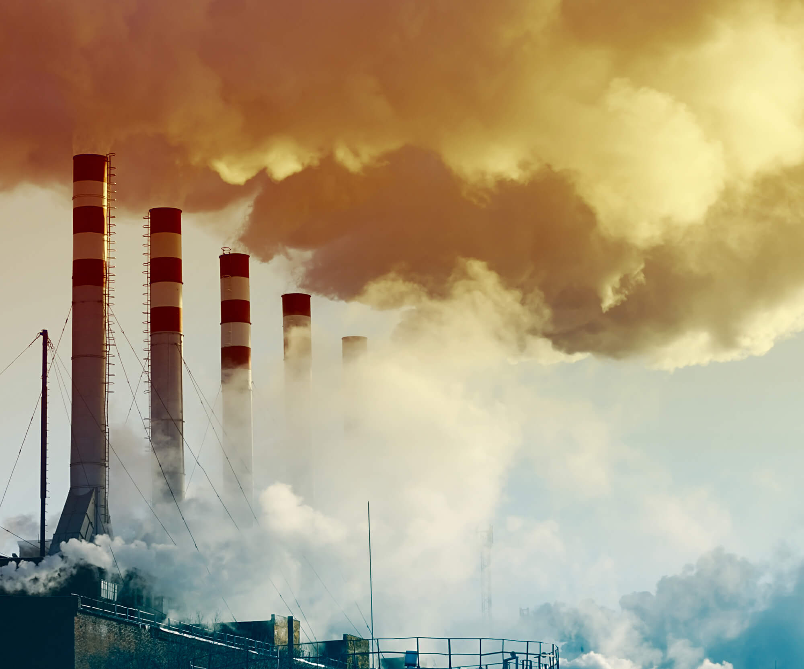

bla bla bla o tom jak hoří a lidi s tím nic moc nedělají

bla bla nevyhazujte odpad do oceanu. zachycují se do toho ryby, želvy, ...
Špatný je i odpad který není vidět
nepižívejte jednorázové plasty nepodporujte vypoužtění špatných plynú do vzduchy! ŠKODÍ TO I VÁM NEJEN LIDEM KTERÉ NEZNÁTE A ŽIJÍ DALEKO...